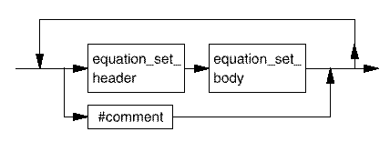

Timing Equations - Reference
This component is used to define a number of timing equation sets. Each timing equation set contains the following:
- A list of the specs used within the timing equation set. These must correspond with timing specs defined in the Timing Specification Component.
- Equation definitions. These are derived specs and can be defined as expressions which can reference the specs mentioned above. They are local to a timing equation set.
- The period resolution to be used within an equation set if the default is not wanted.
- A number of timing sets, each of which must define the timing for all I/O pins.
